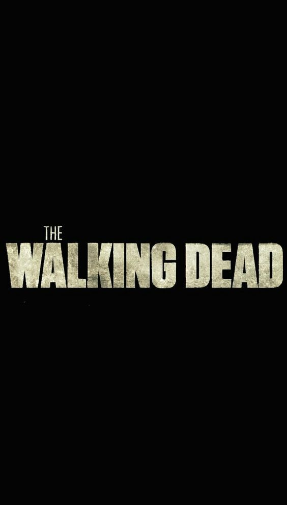

The Walking Dead
Basado en la historieta escrita por Robert Kirkman, este drama crudo describe las vidas de un grupo de sobrevivientes que está siempre en movimiento en busca de un hogar seguro durante las semanas y meses de un apocalipsis zombi. Sin embargo, la presión de estar con vida cada día, lleva a algunos del grupo a la crueldad profunda de cada ser humano y descubren que el miedo abrumador puede ser más mortal que los zombis que caminan a su alrededor. Los conflictos interpersonales pueden representar una amenaza mayor para su supervivencia que los caminantes que deambulan por las calles.
